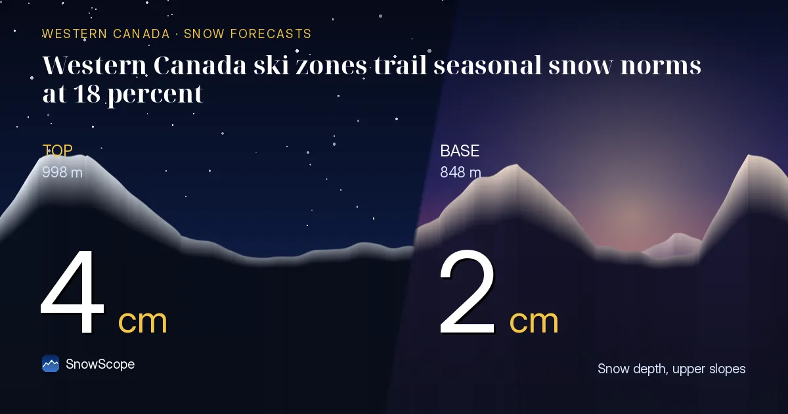
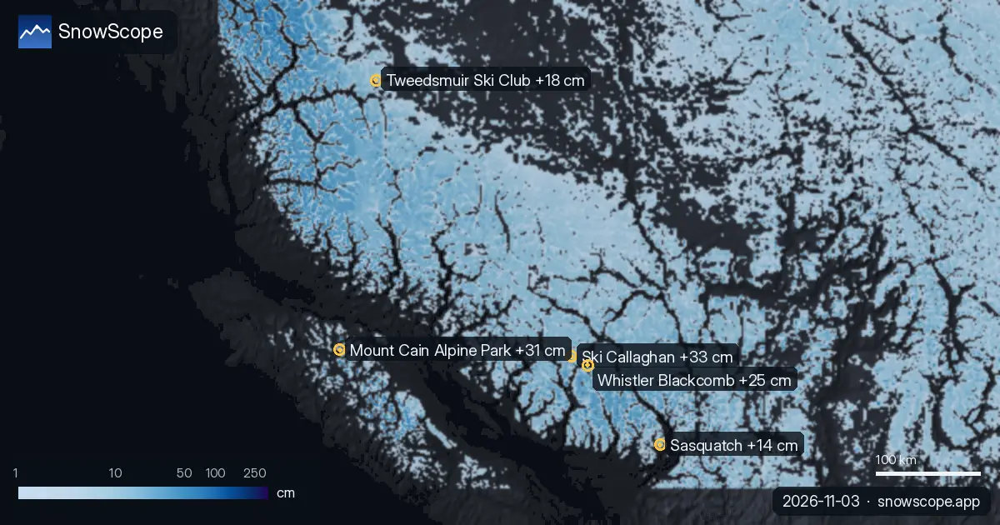
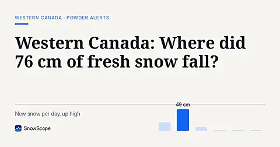

Western Canada ski zones trail seasonal snow norms at 18 percent
Snow across Western Canada's ski zone is running well below historical norms for this stage of the season. Ski Callaghan, the reference point for lower elevations, holds just 18 percent of its typical baseline, while colder high terrain like Mount Cain shows substantial moisture storage.
See the live snow forecast for Ski Callaghan in the SnowScope appSnow depth, powder alerts and the 3D map, free.
Elevation shapes who falls behind and who stays ahead
The snowpack distribution reveals sharp elevation-dependent contrasts in seasonal timing and water storage. Mount Cain Alpine Park leads the region at 68 centimetres on upper slopes, well above the 1 centimetre historically typical for mid-elevation terrain in early November. Whistler Blackcomb, at 61 centimetres on its upper reaches, also runs substantially ahead of its seasonal trajectory.
Mid-range resorts show greater hydrological stress: Tweedsmuir Ski Club holds 21 centimetres against a usual 38 centimetres, while Ski Callaghan's 20 centimetres sits well below its 28-centimetre baseline. Sasquatch, at just 15 centimetres, faces the steepest deficit. This disparity reflects a fundamental principle: in early November, colder high terrain captures precipitation reliably as snow, while warmer, lower elevations receive mixed forms or liquid precipitation.
The region's snow-covered area has contracted from 370,180 square kilometres on November 1 to 329,280 square kilometres today, illustrating accelerated ablation across the warmer zones.
| Resort | Snow depth | New snow, 72 h | Coming, next days | Top |
|---|---|---|---|---|
| Ski Callaghan | 20 cm | 2 cm | 33 cm | 998 m |
| Mount Cain Alpine Park | 68 cm | 3 cm | 31 cm | 1,616 m |
| Whistler Blackcomb | 61 cm | 1 cm | 25 cm | 2,259 m |
| Tweedsmuir Ski Club | 21 cm | 5 cm | 18 cm | 1,650 m |
| Sasquatch | 15 cm | 0 cm | 14 cm | 1,316 m |

Where the November 5–6 moisture arrives, by elevation
The forecast precipitation event will follow the same elevation-dependent dynamics as the region's current snowpack. At Ski Callaghan, incoming snow is estimated at 33 centimetres across the forecast window, but reliable accumulation depends strongly on height. The mid-slopes at 923 metres will gain approximately 4 centimetres over the following seven days, while the base at 848 metres will see marginal gains.
Mount Cain's higher mass—summit elevation 1,616 metres—guarantees that most incoming moisture remains in solid form rather than transitioning through liquid precipitation. The model indicates 20 centimetres at the summit and 11 centimetres at mid-elevation. Whistler's uppermost terrain shows the most dramatic accumulation potential: 62 centimetres at the summit over the seven-day outlook, with 38 centimetres at mid-elevation where precipitation transitions between snow and rain forms.
Timing matters: concentrated snow delivery and long-term water supply
From a hydrological perspective, the timing of incoming precipitation carries as much significance as—and sometimes more than—the volume itself. This system will compress most accumulation into November 5–6, concentrating the seasonal water input rather than distributing it across the month. Such episodic delivery followed by continued ablation at lower elevations means that only high-altitude terrain will retain the incoming snow for sustained spring discharge into river systems.
Western Canada's snow-covered area is forecast to shrink further to 302,380 square kilometres by November 6, indicating that even this precipitation event will not reverse the net loss of persistent cover over the past week. Groundwater recharge and reservoir inflows depend on sustained snowpack accumulation rather than episodic storms followed by rapid melt. Early-season moisture in thin, low-elevation cover often fails to reach rivers; instead, it cycles through rapid sublimation or evaporation within days.
What the model sees and doesn't see clearly
Model confidence in depth distribution at mid-elevations remains moderate. The boundary between snow and rain oscillates substantially from day to day, meaning that terrain near the transition zone will experience heterogeneous precipitation forms. At Ski Callaghan's base elevation of 848 metres, our snow model estimates only 2 centimetres of depth even after the incoming system passes, leaving substantial exposed ground.
By contrast, Mount Cain's mid-slopes will likely accumulate sufficient snow for reliable water storage and skier access. Whistler's high terrain at 2,259 metres offers the strongest confidence: snow accumulation there remains consistent and persistence is assured. Early November snow remains characteristically thin and mobile; trajectories of incoming precipitation matter more than absolute totals at marginal elevations.
What comes after the November 5–6 window
The extended forecast beyond November 6 offers limited relief to the region's accumulation deficit. Upper-level model patterns indicate high pressure building over the northeast Pacific, suppressing additional precipitation systems through mid-November. For water managers tracking reservoir inflow and groundwater recharge, this concentrated precipitation window carries disproportionate importance.
If the November 5–6 system fails to establish persistent snow cover—particularly in mid-elevation bands critical to spring runoff—the region faces a challenging hydrological trajectory through winter. Early-season snow storage now will shape water availability far downstream through summer months.
Tips for skiers
- Target elevations above 1,300 metres where incoming snow accumulation is reliable; Ski Callaghan's base and similar low-lying zones will see marginal cover and significant bare ground.
- Mount Cain Alpine Park and Whistler Blackcomb's mid-to-upper elevations offer the most robust early-season conditions; forecast models indicate 31 and 25 centimetres of incoming snow through November 6.
- Monitor precipitation form closely November 5–6; rain-snow transitions will occur across mid-elevation zones, creating variable surface conditions and measurement uncertainty.
- Early-season snow is thin and may expose subsurface features; consult the official avalanche forecast before venturing off-piste.
- Recognize the two-day precipitation window; conditions were largely dry before November 5 and may remain dry afterward, compressing fresh-snow opportunities into this narrow timeframe.
About these numbers
Resort snow depths are the deepest snow on the resort's upper slopes from the SnowScope snow model (about 1 km, run of 3 November); they are estimates for an area, not a measurement at one point. Station values are measurements on the date shown. Forecasts can change. Always read the official avalanche bulletin before going off-piste.
Official avalanche bulletins: Avalanche Canada
Cite this report
For research, teaching or the press: the numbers and charts are free to reuse under CC BY 4.0 with this citation.
SnowScope (2026), Western Canada ski zones trail seasonal snow norms at 18 percent, https://snowscope.app/blog/en/2026/11/western-canada-snow-forecast-3-november-2026.html, accessed 2026-11-03
SnowScope (Atlas Labs). (2026, November 3). Western Canada ski zones trail seasonal snow norms at 18 percent. SnowScope snow reports. https://snowscope.app/blog/en/2026/11/western-canada-snow-forecast-3-november-2026.html
BibTeX
@misc{snowscope2026westerncanadasnowforecas,
author = {{SnowScope (Atlas Labs)}},
title = {Western Canada ski zones trail seasonal snow norms at 18 percent},
year = {2026},
month = nov,
howpublished = {\url{https://snowscope.app/blog/en/2026/11/western-canada-snow-forecast-3-november-2026.html}},
note = {Published 2026-11-03 16:31 UTC; accessed 2026-11-03}
}· CC BY 4.0 · Methods, data and tools →
Ski Callaghan: snow and temperature by height, this winter vs last (tools) →
Follow Ski Callaghan
Free: a message when fresh snow is coming, and the forecast every morning.
More snow reports

Western Canada mountains carry 42% of their normal snow for mid-November as of 12 November, but 142 cm is forecast over the next two weeks.

Whistler Blackcomb got 75 cm of new snow at the top in a week, then a warm storm with 124 mm of water. A simple guide to base, fresh snow, rain and crust.

Whistler Blackcomb saw 76 cm of new snow in the last 72 hours, with Mount Cain Alpine Park also receiving 64 cm, as of November 16, 2026.